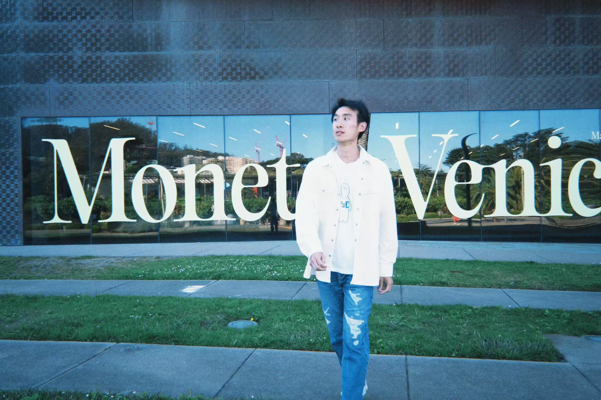

01
CV
Education, experience, honors, and selected academic background.
Open CVFiat Lux
I am Sheng-An (Samuel) Xu (徐晟安), a PhD student in the Department of Industrial Engineering & Operations Research at the University of California, Berkeley. I am fortunate to be advised by Prof. Ying Cui.
Previously, I received my B.S. in Mathematics and Applied Mathematics from Nanjing University, China. I was fortunate to work with Prof. Peng Zhao in the LAMDA Group at the School of Artificial Intelligence, Nanjing University.
My research interests are broadly in decision making, with a focus on online learning, optimization in neural networks, sampling, high-dimensional statistics, and reinforcement learning.

01
Education, experience, honors, and selected academic background.
Open CV02
Generalized Linear Bandits: Almost Optimal Regret with One-Pass Update.
View publications03
Notes and writing will be added here.
Open blogs04
Academic service and professional activities.
View service